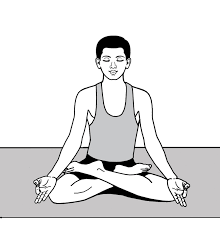

आसन > पद्मासन :

-
पद्मासन, जिसे "लोटस पोज़" भी कहा जाता है, ध्यान और मानसिक शांति के लिए महत्वपूर्ण योगासन है।
पद्मासन करने की विधि :
- आरंभिक स्थिति: समतल जगह पर बैठकर दोनों पैरों को आगे की ओर फैलाएं।
- दाहिने पैर को मोड़ना: अपने दाहिने पैर को घुटने से मोड़ें और इसे बाएं जांघ पर रखें।
- बाएं पैर को मोड़ना: अब अपने बाएं पैर को मोड़ें और इसे दाहिने जांघ पर रखें।
- हाथों की स्थिति: दोनों हाथों को घुटनों पर ज्ञान मुद्रा में रखें।
- सीधा बैठना: रीढ़ को सीधा रखें और गहरी सांस लें। इस स्थिति में कुछ समय तक रहें।
लाभ :
- पद्मासन मानसिक शांति और ध्यान के लिए उत्कृष्ट है।
- यह शरीर के संतुलन को सुधारने और रीढ़ की हड्डी को मजबूत करने में मदद करता है।
Move to top